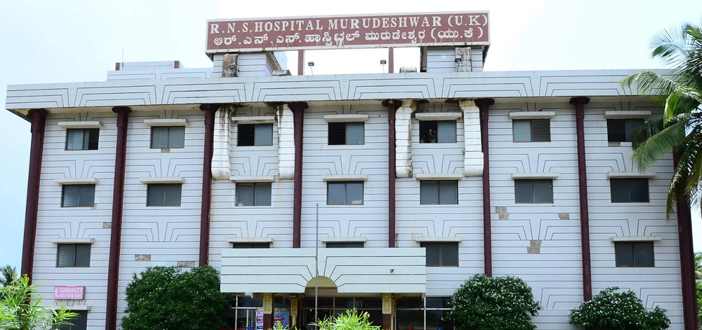
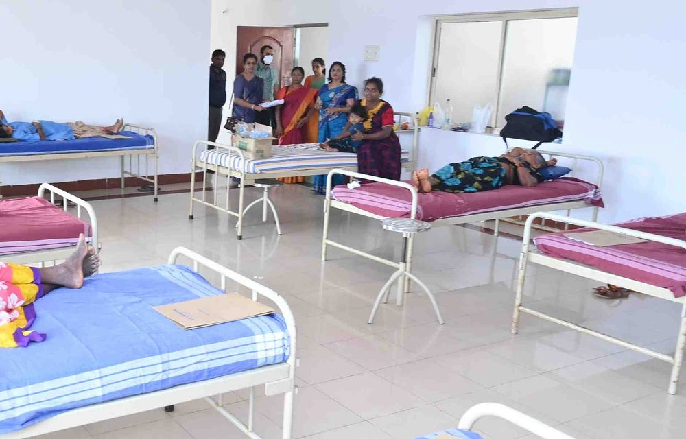

പ്ലസ് ടു
കഴിഞ്ഞോ?
ഇനി എന്ത്?
സ്കിൽസ് ലാബ്കൈകൊണ്ട് ചെയ്ത്
പഠിക്കാം
പിന്നെ, സ്വന്തം
100 ബെഡ് ആശുപത്രി

R.N.S. Hospital, Murudeshwar
വാർഡ് റൗണ്ട്സ്ഞങ്ങളുടെ പൂർവ്വ വിദ്യാർത്ഥിനി
ദേവിക മോഹൻDEVIKA MOHAN
പഠിച്ചത്
RNS, മുരുഡേശ്വർ
B.Sc Nursing · 2015–19
ഇപ്പോൾ
അയർലൻഡിൽ
Advanced Practice Nurse
“Now I am an advanced practice nurse in Ireland.”— Devika’s testimonial, rnsnursingcollege.com
ഇവിടെയും ഒരു
കൊച്ചു കേരളം
✓ഹോസ്റ്റൽ റൂം
✓എല്ലാ ആഴ്ചയും കേരള ഫുഡ് ഡേ
RNS College of Nursing
മുരുഡേശ്വർ, കർണാടക
അഡ്മിഷൻ 2026–27
B.Sc Nursing (4 yrs) · GNM (3 yrs)
INC Recognised
KSNC Recognised
RGUHS Affiliated
100-bed Parent Hospital
WhatsApp ചെയ്യൂ
+91 99640 06920